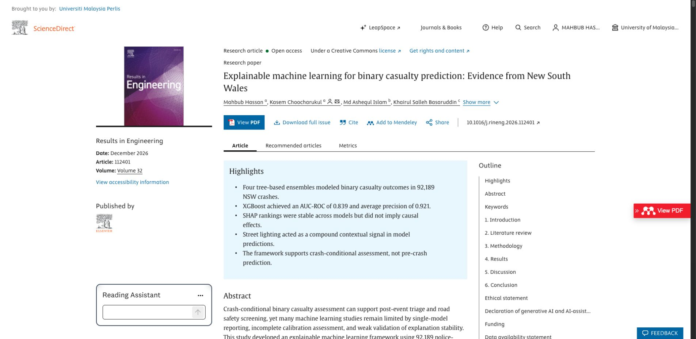

Explainable AI
Results in Engineering · Volume 32 · Article 112401
Explainable machine learning for binary casualty prediction: Evidence from New South Wales
Four tree-based ensembles model casualty outcomes across 92,189 NSW crashes. XGBoost achieved an AUC-ROC of 0.839, while SHAP analysis tested the stability of model explanations.